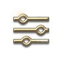

Loading locations...
Try another search or broaden your filters.
Browse the game's original maps, gathering nodes, monster placements, NPCs, settlements and travel entrances. Search by name, resource, creature type or zone.
Seven regions, streamed in original resolution. Location coordinates are joined to decoded client tables and zone polygons.
This is client data, not a live server tracker. Spawn groups can have alternative creatures or conditions. A marker shows an authored candidate position, not a guaranteed active spawn. Zone assignment uses 2D boundaries; check altitude for caves and overlapping floors. Missing records are not invented.
Saved locations stay in this browser. Shared links include your map view and filters, not your bookmarks. No account or analytics are required.
Independent, unofficial map. AION 2 names and game artwork belong to their respective owners. Data snapshot: October 2026.
Enable JavaScript to explore the interactive map.